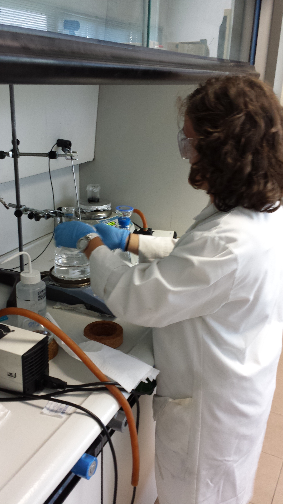

ESR fellow from ICN delivered an oral talk at the MFS2013
- Created on 01 October 2013
ESR fellow Elzbieta Pach from RADDEL partner ICN has delivered an oral talk at the congress Microscopy at the Frontiers of Science 2013 (MFS2013), which took place on the 17-20th September in Tarragona. The congress represented the 3rd joint congress of the Spanish and Portuguese Microscopy Societies and had the Israel Society for Microcopy as invited guest. Some of the invited speakers for this congress included:
- Prof. Dan Shetchman (Technion Israel Institute of Technology) (Nobel prize laureate in chemistry 2011)
- Prof. Georg Schitter (University of Vienna, Austria)
- Prof. Paulo Ferreira (University of Texas, USA)
- Prof. Gil Markovich (Tel Aviv University, Israel)
Elzbieta delivered the talk "Electron Microscopy Investigation of Filled and Functionalized Carbon Nanotubes", where she presented the results obtained so far during her research project as early-stage researcher in RADDEL.
Congratulations!

Secondment of ESR fellow from CNRS at ICMAB-CSIC and ICN
- Created on 07 August 2013
Cinzia Spinato, ESR fellow from RADDEL partner CNRS (Strasbourg, France) has recently completed a 2-week secondment stay (8-19th July) at the Institute of Materials Science of Barcelona (ICMAB-CSIC) and the Catalan Institute of Nanotechnology (ICN), both located in the Bellaterra campus of the Autonomous University of Barcelona (UAB).
During this secondment Cinzia had the opportunity to learn the basic laboratory skills for the purification, shortening and filling of carbon nanotubes (CNTs), the first step into the preparation of filled nanocapsules for biomedical applications. The fellow will be able to apply these acquired skills into her own research project at Strasbourg, which deals with the functionalization of carbon nanotubes with different organic groups which will be further attached to the targeting moieties in the final step for the synthesis of the carbon nanocapsules.She also was trained by Elzbieta Pach (ESR fellow from ICN) on the basics for manipulation of the electron microscopes available for RADDEL at ICN (SEM, TEM, HRTEM). Cinzia learnt how to prepare the samples for the different instruments and to interpretate the results for filled carbon nanotubes.
|
ESR fellow Cinzia from RADDEL partner CNRS manipulating carbon nanotubes at ICMAB-CSIC. |
|
Cinzia working with a Transmission Electron Microscope (TEM) at ICN. |
|
Cinzia delivered a presentation about her RADDEL project results during the weekly meetings held at ICMAB-CSIC. From left to right: Miriam (summer student), Luizetta (summer student), Magdalena Kierkowicz (ESR fellow from ICMAB-CSIC), Cinzia Spinato (ESR fellow from CNRS), Dr. Gerard Tobias (RADDEL project coordinator and principal investigator in RADDEL for the partner ICMAB-CSIC), Dr. Belén Ballesteros (principal investigator in RADDEL for partner ICN), Laura Cabana (PhD student at ICMAB-CSIC), Stefania Sandoval (PhD student at ICMAB-CSIC), Elzbieta Pach (ESR fellow from ICN) and Markus Martincic (ESR fellow from ICMAB-CSIC). |
||
NanoMedicine School 2013; 10-11 September (Trieste, Italy)
- Created on 12 July 2013
The scientific program includes topics like carbon nanostructures, nanoparticles, polymeric systems for drug delivery and sensors. Some of the invited speakers are: - Khuloud Al-Jamal (King’s Collegue London): “Liposomes in Drug Delivery”. - - Cécilia Ménard-Moyon (CNRS, Strasbourg): “Chemical Functionalization of Carbon Nanotubes for Applications in Nanomedicine”. - - Pasquina Marzola (INSTM & University of Verona): “Magnetic Nanoparticles as Contrast Agents for MRI”. - - Mauro Carraro (University of Padova): “Potential Applications of Polyoxometalates as Inorganic Nanodrugs and Antibacterial Agents”. - Lucia Pasquato (University of Trieste): “Engineered Gold Nanoparticles for Diagnosis, Imaging and Therapy”. For the complete program and details please visit the NMS2013 webpage: http://www.dscf.units.it/nms2013/Home.html Participation in the school is free of charge, but in order to attend registration is necessary.
A Nanomedicine School will take place next September in Trieste (Italy). The school is designed for anyone with interest in this rather new and emerging field of research. The school is co-organised by RADDEL through its partner UNITS.
Sponsored by:


ESR fellow from UoI delivered a seminar at NIST
- Created on 03 June 2013
Anne Forney, RADDEL ESR fellow from University Of Ioannina (Greece) gave a seminar on 22nd May at the Radiation and Biomolecular Division of the National Institute of Standards and Technology (NIST) in Gaithersburg, Maryland (USA). The topic of her seminar was the use of Monte-Carlo simulation codes for dosimetry at the cellular level.

Anne's RADDEL project deals with Monte-Carlo radiation transport simulations in order to quantify the energy deposition pattern in carbon nanotubes and targeted cells by different radionuclides.
Congratulations Anne!
ESR fellow from ICN trained in Electron Microscopy
- Created on 03 June 2013
As part of her individual training program, RADDEL ESR fellow Elzbieta Pach from the Catalan Institute of Nanotechnology (ICN) in Spain attended the 2013 Quantitative Electron Microscopy (QEM) School on advanced TEM quantitative techniques, which took place in Saint-Aygulf (France) last month (13th-24th May, 2013):
QEM represented a unique occasion for the RADDEL fellow to learn and find out about new breakthroughs around Transmission Electron Microscopy. There were lectures providing an exhaustive overview of up-to-date TEM techniques and a series of practicals and workshops covering fundamental aspects of crystallography, tomography and x-rays among others.
Elzbieta will also attend this month (10th-21st June, 2013) a workshop on TEM organised by EMAT - Electron Microscopy for Materials Science Centre (Antwerp, Belgium), whose director is Prof. Gustaaf Van Tendeloo, one of the partners of the RADDEL project and a worldwide known scientist for his contributions to electron microscopy during the past decades.

The fellow will receive a complete hands-on training concerning transmission electron microscopy, including the basic principles of electron diffraction, high resolution transmission electron microscopy as well as analytical transmission electron microscopy. The students attending this workshop will be provided also with a unique opportunity to work with the most advanced transmission electron microscopes currently available thanks to a series of practical sessions.
These two training activities will improve Elzbieta's skills on electron microscopy and will help her to achieve the best possible results during her research project, which deals with the characterisation of carbon nanocapsules at the different stages of the project using Electron Microscopy Techniques (SEM, HRTEM, STEM, EDX, EELS).